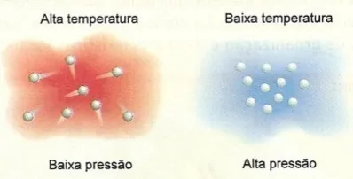
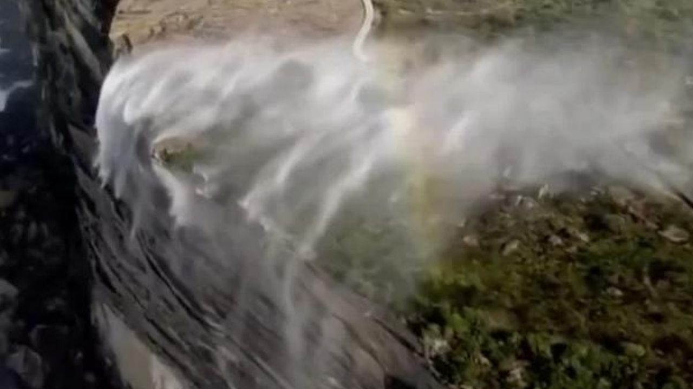

Cachoeira Reversa

Cachoeira Que Cai Pra Cima?
Como que isso acontece? Por que a água sobe em vez de cair?
Hipóteses: Muitos podem responder que é, por conta da temperatura
- Temperaturas altas realmente podem evaporar a água, mas não é o caso dessas cachoeiras, as suas águas não são ferventes.
Pode-se dizer que, devido a baixa pressão atmosférica do local (altitude alta), pode fazer com que o ponto de ebulição da água seja menor
- No Monte Everest por exemplo (Um dos lugares mais altos da Terra), devido a baixa pressão atmosférica, o ponto de ebulição da água é de 68 °C a 71 °C, e isso no topo do Everest, diferente das planícies em que vivemos que possui mais pressão atmosférica, que é 100° para evaporar a água.
- Mas em teoria, O ponto de ebulição dessas cachoeiras é mais próximo de 100 °C, e as águas são frias, então pode ser uma das primeiras hipóteses que vem na cabeça após temperatura, mas não é o que acontece nelas.

Passo a Passo da Cachoeira de Fumaça
(Experiência de Física):
Materiais:
- Uma garrafa PET vazia
- um rolo de papel (tipo papel higiênico ou papel toalha)
- isqueiro/fósforo
Montagem:
- Faça um furo na lateral da garrafa, próximo à base, que seja apenas grande o suficiente para passar o rolo de papel.
Procedimento:
- Faça um tubo com o papel, enrolando-o firmemente.
- Insira uma das pontas do tubo de papel no furo da garrafa.
- Acenda a outra ponta do papel que está do lado de fora.
- Assopre levemente para que o papel fique em brasa e produza bastante fumaça.
Resultado:
A fumaça entrará na garrafa, se resfriará, tornar-se-á mais densa que o ar no interior e, protegida de correntes de ar, descerá em um fio laminar, simulando uma cachoeira invertida.
Segurança: Recomenda-se realizar em local arejado
Análise: Muito Bem, temos o que realmente acontece
- Cachoeiras reversas ocorrem quando há ventos fortes, geralmente superiores a 70 km/h.
- Ventos fortes e cruzados: O fator principal é a intensidade do vento que sopra em direção contrária ao fluxo da água.
- Topografia: Ocorre com mais frequência em áreas elevadas, serras e penhascos.
- Exemplos: Cachoeira da Fumaça (Brasil), Royal National Park (Austrália) e Naneghat (Índia) são conhecidos por esse fenômeno.
Em resumo, isso ocorre especialmente quando a força do vento supera a força da gravidade

Conclusão:
O Experimento desse fenômeno é incrível, e especialmente ver uma dessas cachoeiras pessoalmente (a não ser que você saia voando por causa dos 70 Km Por Hora 😅)
Podemos às vezes afirmar que em teoria isso acontece por causa de Pressão atmosférica e temperatura, sendo que na real, é apenas a velocidade dos ventos e o fator geográfico também (Especialmente os dois)
Viu o Quão a natureza é Linda? O Universo tem muitos mistérios para serem desvendados!
Espero que tenha Gostado dessa experiência 🙂
Obrigado!